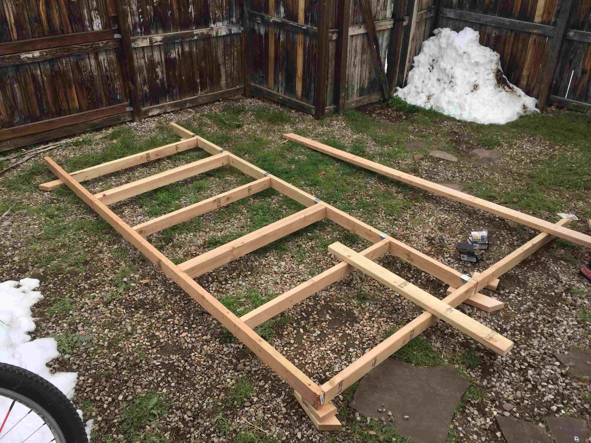
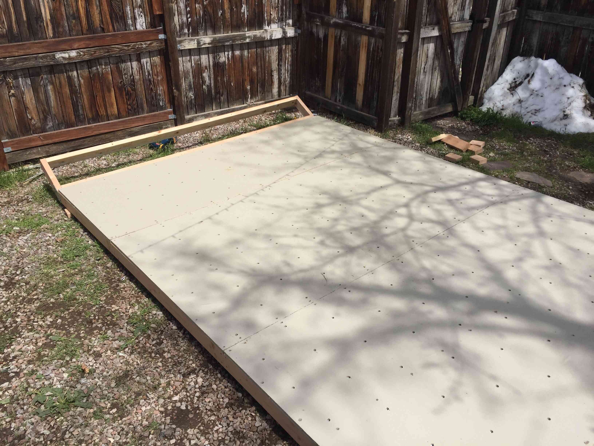
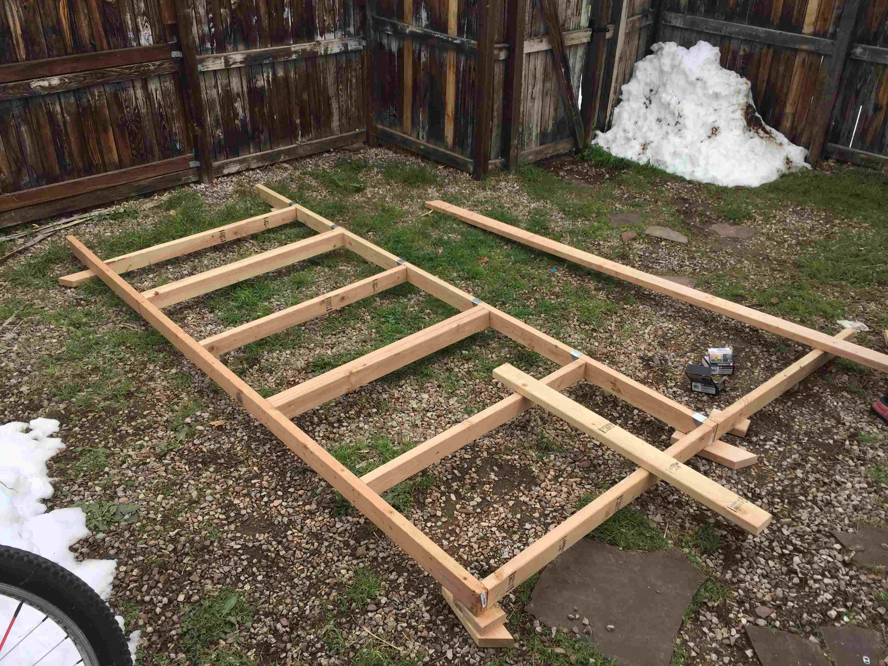
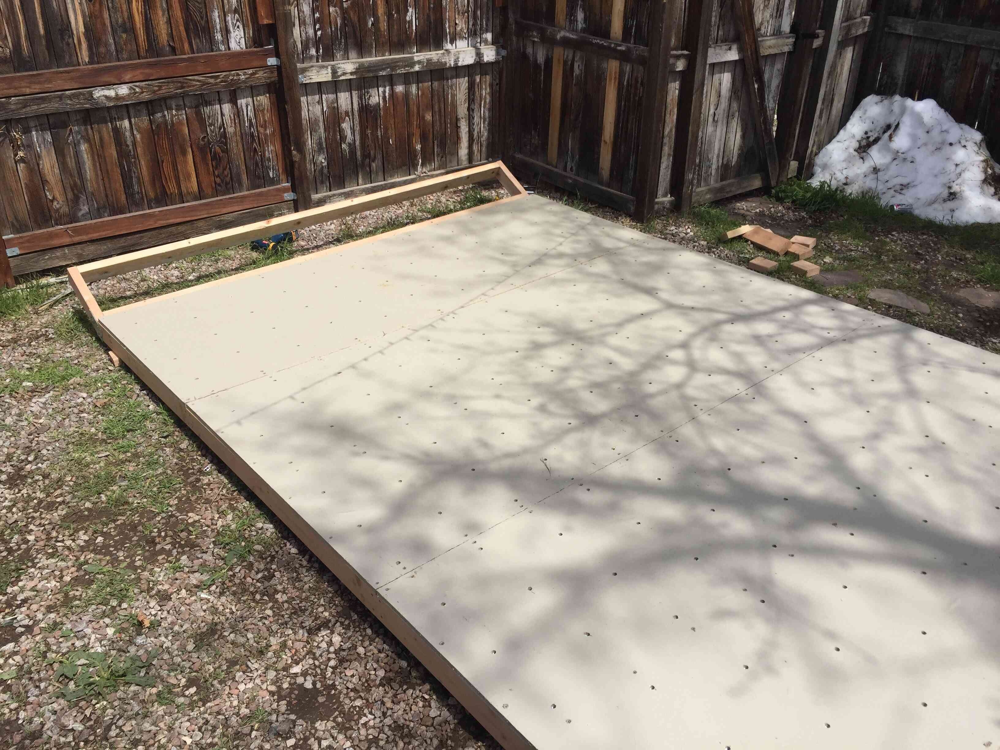

The finished bouldering wall setup in my backyard. Some of the holds are homemade but most are commercial.
The raw materials for the wall. 3 sheets of 3/4" OSB and a bunch of 2x4's and 2x4's.
All of the holes drilled for the T-nuts. I could stack the panels together and drill all the holes once.
Initial frame assembly. I used strong ties to do the inner joints and just screwed the 2x4's in on the sides.
Laying down the panels. I painted both sides of the panels to protect them, then hammered in all the T-nuts before this.
All of the panels screwed down to the frame, I went a little overboard with the screws.
The kicker board frame was added. I used some flat plate ties for the sides.
The full assembly completed, just not upright. It took 4 of us to move the wall, but flipping it upright was suprisingly easy. I painted the frame after it was in the final spot.
About this project
Unable to climb in the gym, I decided it would be cool to have the ability to train at home. This project ended up being a little more expensive than I would have liked, but I gained some experience with framing and mold making for custom climbing holds. It ended up being pretty sturdy and really fun to climb on!